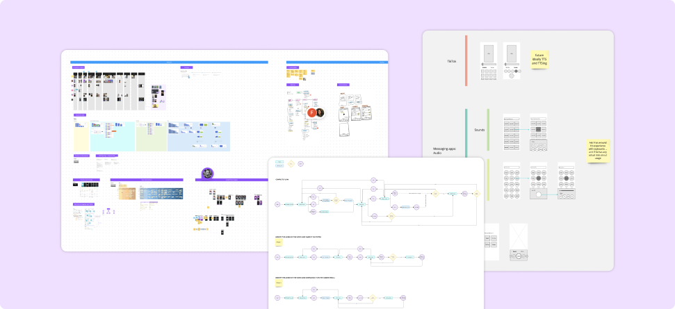
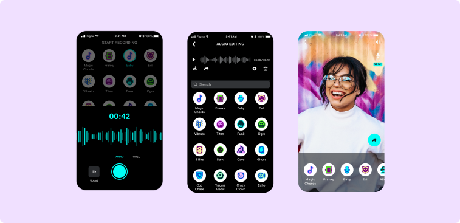
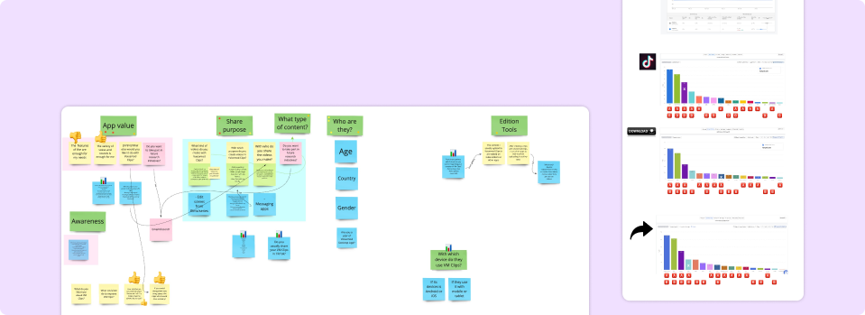

As a Product Designer, I led the end-to-end design process for Voicemod Clips, a mobile application available on iOS and Android platforms. This innovative app harnessed Voicemod's cutting-edge voice-changing technology, allowing users to apply dynamic voice effects to their recorded audios, videos, and even GIFS. The primary objective was to empower users to create unique and entertaining content for social media platforms like TikTok, Instagram, and Snapchat.
One of the key problems of the Voicemod ecosystem was the lack fo a specifically designed for the mobile space. Additionally, there was no way in Voicemod ecosystem to record themselves, using Voicemod in an asynchronous way. Users only can hear themselves and be heard by other people, but they couldn't record content for other use cases like dubbing a video, creating voiceovers, creating audio assets, etc.
Looking at the user feedback in our Discord Community, we saw that they were requesting for a long time an asynchronous use case for Voicemod, allowing them to apply voice-changing effects to pre-recorded audios and videos, not only using them in live conversations.
During our research, it was obvious a growing trend of apps centered around fast video content, like TikTok, Snapchat or Instagram Reels, catering to the preferences of Gen Z users as apps to consume and produce short video content.
During our research, we sent out a survey to a group of users belonging to Gen Z, who were identified as power users of Voicemod. The aim was to understand their communication habits and preferences.
The survey results revealed that Gen Z users primarily communicate through platforms such as FaceTime, Snapchat, and iMessage. These users frequently engage in communication methods like making calls and sending audio messages. This valuable insight further emphasized the potential for Voicemod Clips to cater to their preferences and provide a unique and entertaining experience in these communication spaces and offer a unique and entertaining experience.
In the initial phases, I worked closely with the Voicemod team to conceptualize the app's features and functionalities. This involved brainstorming sessions, wireframing, and prototyping. The goal was to create a user-friendly interface that seamlessly integrated Voicemod's powerful voice-changing technology.
In order to gather valuable insights and ensure that Voicemod Clips met the needs of our users, we actively sought feedback from our Discord community and conducted unmoderated tests with early prototypes. This collaborative approach allowed us to incorporate user input and refine the app's design and functionality based on the preferences and expectations of our target audience.
We maintained a close collaboration with stakeholders, presenting weekly advancements in the design process and also conducting feedback, brainstorming sessions, and workshops including exercises like User Story Mappings. This collaborative approach allowed us to incorporate real-time feedback, aligning the design with the company objectives and the evolving product-market fit.
We regularly analyzed trends in the competitive landscape of voice-changing apps to stay ahead of industry developments. This involved studying similar apps, identifying emerging features, and incorporating relevant elements into Voicemod Clips to maintain a competitive edge.
Recognizing the user needs they had been requesting and seeing these opportunities on the mobile space, we embarked on the journey of developing Voicemod Clips, providing a dedicated mobile application that fulfilled these demands and empowered users to unleash their creativity and have fun on another level.
To address the user needs and the asynchronous use case demands, Voicemod Clips incorporated the following key features:.
Users could now effortlessly create and share engaging content on various social media platforms or communicate via voice messages in a different way with their friends, showcasing their creativity and having fun.
Throughout the development process, we actively sought user feedback and continuously, including in-app messages asking for feedback in key moments, that helped us to iterate on Voicemod Clips based on their input. As a result, we introduced several additional features to further expand the creative capabilities of our users.
We also conducted several experiments around several features, such as the best order of the voices to maximize retention and the number of creations that were shared on the social media apps of our interest.
The strategic design decisions and iterative improvements led to a loved by our users mobile app:
The iterative design process that included incorporating these additional features and improving several points of the app, Voicemod Clips gained +250K downloads and 4.3 avg. note on Apple Store and Google Play, providing users with a set of tools to unleash their creativity and produce unique and captivating content. The iterative design process, combined with the integration of new technology possibilities, ensures that Voicemod Clips remains at the forefront of mobile app innovation and continues to meet the evolving needs and expectations of our users.